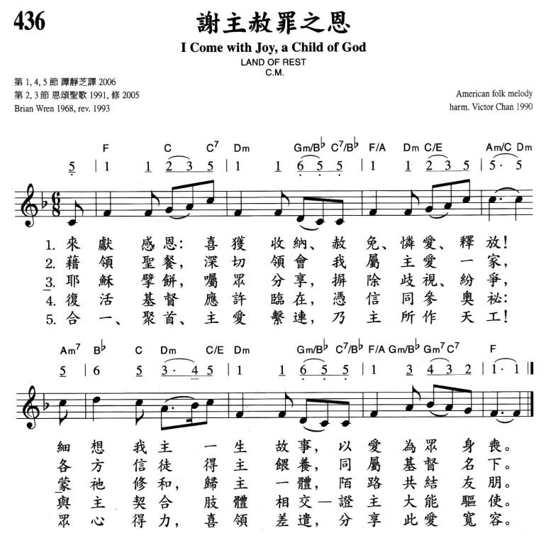

0533 I Come with Joy a child of God, _Brian
A. Wren 謝主赦罪之恩 DOVE OF PEACE
▲
| 簡介
I
Come with Joy |
| This text affirms that Christian unity
is not achievement but gift, one renewed each time we gather for the
Lord’s Supper. Each of us enters as an “I” and leaves as part of “we.”
The unadorned language of this text is well matched to the simple
shape-note tune that sets it here. |
|
|
436謝主赦罪之恩 |
|
1 I come with joy, a child of God,
forgiven, loved and free,
the life of Jesus to recall,
in love laid down for me,
in love laid down for me.
2 I come with Christians far and near
to find, as all are fed,
the new community of love
in Christ's communion bread,
in Christ’s communion bread.
3 As Christ breaks bread, and bids us share,
each proud division ends.
The love that made us, makes us one,
and strangers now are friends,
and strangers now are friends.
4 The Spirit of the risen Christ,
unseen, but ever near,
is in such friendship better known,
alive among us here,
alive among us here.
5 Together met, together bound
by all that God has done,
we'll go with joy, to give the world
the love that makes us one,
the love that makes us one.
|
來獻感恩：喜獲收納、赦免、憐愛、釋放！
細想我主一生故事，以愛為眾身喪。
藉領聖餐，深切領會我屬主愛一家，
各方信徒得主餵養，同屬慈督名下。
耶穌擘餅，囑眾分享，摒除歧視、紛爭，
蒙祂修和，歸主一體，陌路共結友朋。
復活基督應許臨在，憑信同參奧祕：
與主契合肢體相交--證主大能驅使。
合一、聚首、主愛繫連，乃主所作天工！
眾心得力，喜領差遣，分享此愛寬容。 |
|


|
| |
|
| 436 |
謝主赦罪之恩 |
I come with joy, a child of God |
聖餐 |
436 |
Notes
Scripture References:
st. 1 = Gal. 1:4
Brian A. Wren (b. Romford,
Essex, England, 1936) wrote this communion hymn in Hockley, Essex, England,
in July 1968 and revised it in 1970. The text was first published in the
Canadian Anglican-United Hymn Book (1971); he revised it again
in 1982 and 1995. Wren wrote this text to summarize a series of sermons on
the meaning of the Lord's Supper, specifically as a post-sermon hymn to help
illustrate the presence of Christ in the sacrament. He states that he wanted
to express this
as simply as possible,
in a way that would take the worshipper (probably without . . .
recognizing it) from the usual individualistic approach to communion ("I
come") to an understanding of its essential corporateness ("we'll go").
Wren has carefully worked
out the progression from "I" to "we." This text contains themes of
remembrance (st. 1), of sharing the bread and wine in communion with the
saints (st. 2-3) and with Christ in his presence (st. 4), and of Christian
service (st. 5), but the prevailing tone is one of joy and praise.
Wren is a major British
figure in the revival of contemporary hymn writing. He studied French
literature at New College and theology at Mansfield College in Oxford,
England. Ordained in 1965, he was pastor of the Congregational Church (now
United Reformed) in Hockley and Hawkwell, Essex, from 1965 to 1970. He
worked for the British Council of Churches and several other organizations
involved in fighting poverty and promoting peace and justice. This work
resulted in his writing of Education for Justice (1977) and Patriotism
and Peace (1983). With a ministry throughout the
English-speaking world, Wren now resides in the United States where he is
active as a freelance lecturer, preacher, and full-time hymn writer. His
hymn texts are published in Faith Looking Forward (1983), Praising
a Mystery (1986), Bring Many Names (1989),New
Beginnings (1993), and Faith Renewed: 33 Hymns Reissued and
Revised (1995), as well as in many modern hymnals. He has also
produced What Language Shall I Borrow? (1989), a discussion
guide to inclusive language in Christian worship.
Liturgical Use:
Lord's Supper–sing entire hymn before or during the Lord's Supper; perhaps
save stanza 5 for a doxology afterwards.
--Psalter Hymnal
Handbook
https://hymnary.org/files/articles/Wren%2C%20I%20Come%20With%20Joy.pdf
https://www.umcdiscipleship.org/resources/history-of-hymns-i-come-with-joy
BY C. MICHAEL HAWN
"I Come with Joy"
by Brian Wren;
The United Methodist Hymnal, No. 617
Brian Wren
I come with joy to meet my Lord,
forgiven, loved and free,
in awe and wonder to recall
his life laid down for me.*
The Lord’s Supper is one of the most important practices of the Christian
church.
Although not a universal ritual among Christians (for example, neither the
Society of Friends nor the Salvation Army celebrates Communion) and many
Christian traditions are unable to celebrate around the table together, the
Lord’s Supper is a primary symbol of our relationship to Christ and one another.
Brian Wren (b. 1936) is one of the most vibrant hymn writing voices today.

One would have to search carefully to find a hymnal that did not include at
least a handful of his hymns. “I come with joy,” for example, appears in at
least forty hymnals in North America. Brian Wren was born and raised in Romford,
Essex, England. His B.A. and Ph.D. degrees are from Oxford University. He was
ordained in the United Reformed Church in Great Britain, but now is now a
citizen of the United States. He holds the distinction of Professor Emeritus at
Columbia Theological Seminary, Decatur, Georgia, and has been honored as a
Fellow of the Hymn Society in the United States and Canada, in addition to
possessing a lengthy list of publications and professional accomplishments.
Brian is married to Susan Heafield, a United Methodist minister, who sometimes
collaborates with him in composing congregational song. They share a ministry in
providincreative worship resources that may be found at
www.praisepartnersworship.com.
“I Come with Joy” was written in 1968 for the author’s congregation at Hockley
as a summation of a sermon series on Communion. It reflects a shift in many
Communion hymns since the Second Vatican Counsel (1962-65) from the Lord’s
Supper as a memorial observance to Communion as a celebration that shapes the
Christian community – the body of Christ. Rather than focusing on the suffering
Christ on the cross, an image most appropriate to Maundy Thursday or Good
Friday, many recent Communion hymns emphasize the Eucharistic dimensions of the
feast. “Eucharist” is a term from the Greek that denotes thanksgiving. Thus,
uncharacteristic of many older Communion hymns, the incipit (first line) speaks
of an attitude of joy when approaching the Table.
The first stanza is written from a first-person singular perspective. The
individual worshipper comes to the table with joy for what Christ has done. We
are “forgiven, loved, and free.” Indeed, if this hymn were sung immediately
before the Great Thanksgiving, or Eucharistic prayer, many congregations would
have participated in the prayer of confession, received the words of assurance
of pardon, and passed the peace of Christ to one another. Thus, as we approach
the Table, our earlier ritual actions would enable us to indeed be “forgiven,
loved, and free.”
The second stanza places the individual worshiper of the previous stanza
within the broader Christian fellowship – with “Christians far and near” who are
part of “the new community of love.” No longer is this a table of individual
penitence, but a communal feast enabled by “Christ’s communion bread.”
By the third stanza, the perspective changes from the first person singular
to the first person plural. It is now “we” and “us” who are being shaped as
one in Christ’s love. It is the Table that bridges the barriers that divide us:
Christ’s love “makes us one” and “strangers now are friends.”
The fourth stanza, “we meet the Lord” and experience “His presence”
through the meal. Christ’s presence, always near, is experienced “in . . .
friendship better known.”
The final stanza functions as a sung benediction. “Together met, together
bound,we'll go our different ways.” Through the singing of this hymn, we are
molded into the body of Christ in worship and return to the world to witness,
not as individual Christians, but as Christ’s “people in the world.”
Brian Wren often revisits his texts. Recent publications indicate the revision
of his opening line from “I come with joy to meet my Lord” to “I come with joy,
a child of God.” This modification strengthens the relationship between Christ
and his children – a family that gathers at the table.
The Rev. Wren is the author of several books, the best known of which are What
Language Shall I Borrow? - God-Talk in Worship: A Male Response to Feminist
Theology (1989, 2009), Praying Twice: The Music and Words of Congregational Song
(2000), Advent, Christmas and Epiphany: Liturgies and Prayers for Public Worship
(2008), Hymns for Today (2009), and seven collections devoted to his
approximately 250 hymns.
*© 1971, rev. 1995 Hope Publishing Company, Carol Stream, IL 60188. All rights
reserved. Used by permission.
C. Michael Hawn is University Distinguished Professor of Church Music, Perkins
School of Theology, SMU.
https://www.methodist.org.uk/our-faith/worship/singing-the-faith-plus/hymns/i-come-with-joy-a-child-of-god-stf-588/
Children receiving communion at Reeves United Methodist Church in Liberia
Ideas for use
I Come with Joy
Consider singing verses 1-3 before the sharing of communion bread and wine, and
verses 4-5 following, in preparation for the “going out” that the words
anticipate.
You may wish to sing the first three verses as the bread and wine are brought
forward to the communion table by a single individual, perhaps a child.
The first two verses also suggest the possibility of being sung by solo voices,
and the third by the person leading the celebration of communion. The rest of
the congregation might then join in for verse 4 and 5.
More information
This hymn was written in 1968 for Brian’s congregation at Hockley in Essex (now
Hockley and Hawkwell United Reformed Church) to conclude a sermon-series about
communion. The words have what has been described as an “egg-timer” shape:
dispersed Christians coming together for worship and spread out into the world
again. As Brian notes, the verses also progress from the individual (“I come”)
to the collective (“we’ll go”). Verse 4 describes Christ’s presence within the
faith community as well as in the communion meal.

Brian revised the hymn in 1977, avoiding the non-inclusive language of the
original (e.g.“Man’s true community of love” in v2) and it was this version that
was used in Hymns & Psalms (H&P 610). In 1993, Brian revised the text again in a
way that reflected his evolving desire to avoid God-language that is male and
hierarchical.
He had laid out his thinking fully in his influential 1989 book, What
Language Shall I Borrow?: God-talk in worship – a male response to feminist
theology.
This led to the revision of many of his earlier hymn texts (for instance, Christ
is alive! Let Christians sing (StF 297))
and accounts for many of the differences between the versions of this hymn
printed in Singing the Faith and Hymns & Psalms.
Apart from the first line itself (previously "I come with joy to meet my Lord")
the most significant changes are those in the final two verses – especially
verse 5, where the joy of gathering in worship (v.1) now comes round full circle
and is expressed in the Christian sharing of God’s love. Poetically stronger,
this revision also steps back from the previously sharp division between God’s
people and “the world”, as if to say: “We all live in God’s world; we are all
God’s children; and we are all in this together”.
(1977 version)
Together met, together bound,
we’ll go our different ways,
and as his people in the world
we’ll live and speak his praise
(1993 version)
Together met, together bound
by all that God has done,
we’ll go with joy, to give the world
the love that makes us one.
") Following
an education at Oxford University, Brian Wren was ordained as a Congregational
minister in 1965, and held an appointment at Hockley, Essex. It was for the
congregation there that he wrote some of his earliest (and still most familiar)
hymns. Many of these were set to music by his friend Peter Cutts and published
in his first collection, Faith Looking Forward (1983). In 1970 he became an
education consultant and writer, working for Third World First and as a
Chairperson of the Council of War on Want.
Following
an education at Oxford University, Brian Wren was ordained as a Congregational
minister in 1965, and held an appointment at Hockley, Essex. It was for the
congregation there that he wrote some of his earliest (and still most familiar)
hymns. Many of these were set to music by his friend Peter Cutts and published
in his first collection, Faith Looking Forward (1983). In 1970 he became an
education consultant and writer, working for Third World First and as a
Chairperson of the Council of War on Want.
As his hymns became more widely known, Brian Wren was increasingly in demand in
the United States as a leader of hymn and worship workshops. He moved to the
States in 1991 and, from 2000 to 2007, was the John and Miriam Conant Professor
of Worship at Columbia Theological Seminary in Decatur, Georgia.
Brian's 1996 collection, Piece
Together Praise: a theological journey contains
all his texts in their revised form to that date, but he continues to write. His
most recent collection of hymns, In
God Rejoice!,
was published in 2012, while Hymns
for Today offers
an accessible overview of hymns written between 1983 and 2007.